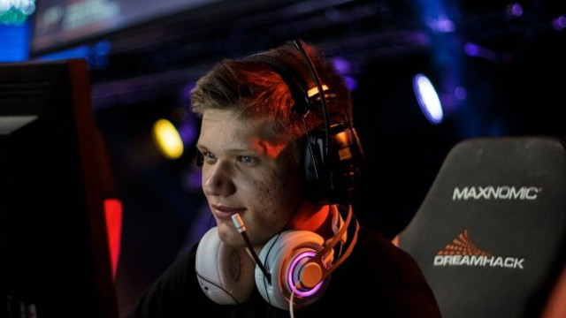
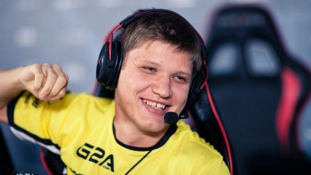
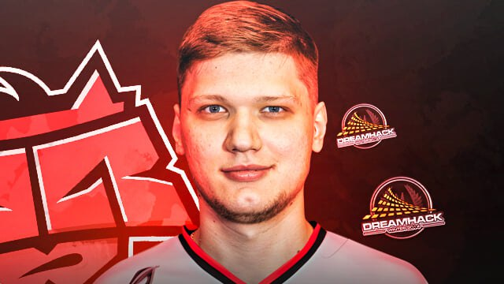

Oleksandr "s1mple" Kostyliev
About him



- TOP 20 HLTV: top 1 2018, top 2 2019, top 1 2020
- Main victories: ESL KATOWICE 2020, INTEL GRANDSLAM
- OTHER ACHIEVEMENTS: Sushi, Twitch and Media giant
INFORMATION ABOUT PLAYER
Oleksandr "s1mple" Kostyliev (born October 2, 1997) is a Ukrainian professional Counter-Strike: Global Offensive player who plays for Natus Vincere as the AWPer. He is widely considered as the greatest player in CS:GO history
2014
S1mple's first team was a team called LAN DODGERS, but he was soon signed by Courage Gaming. Around September 2014, s1mple was signed by a large organisation known as Hellraisers. There, he joined ANGE1, Dosia, Kucher, and Markeloff, who s1mple considers his idol.2015
In January 2015, s1mple was soon removed from Hellraisers due to his inflammatory comments about Germans, and an ESL wire ban for cheating. S1mple himself says that the ban was from cheating in Counter-Strike 1.6. However, records from ESL proves that it was an in game ban when S1mple played CS GO.This ban was also extended to 2016 due to ban evasion. S1mple was soon after signed by Flipsid3 Tactics, but his time in the team would cut short due to the team's semi-final exit at ESWC 2015. At this period in his career, s1mple was known for being quite "toxic", or rude to his teammates.2016
After a short stint studying Chinese at a university, s1mple moved to America in early 2016 and joined Team Liquid. A Team Liquid player, Spencer "Hiko" Martin, was standing in for Flipsid3 at ESWC 2015, and he developed a friendly relationship with s1mple there. Team Liquid surprised at the first major, and reached the semifinals of MLG Major Championship: Columbus, before falling to the eventual champions, Luminosity Gaming. Despite this result at the game's biggest tournament, it wouldn't be long before s1mple would leave Team Liquid, citing homesickness. The next major of the year was approaching, and s1mple once again played for Team Liquid. During the semifinals at ESL One Cologne 2016, Valve Corporation added a graffiti on Cache commemorating s1mple's falling AWP play against fnatic. Thus, Team Liquid became the first North American team to reach a major final. They were stopped in the finals by the same Brazilian lineup of SK (formerly Luminosity Gaming). After leaving Team Liquid, he replaced Danylo "Zeus" Teslenko on Natus Vincere. With Na'Vi, s1mple won ESL One: New York 2016, and he was awarded the #4 placement in the HLTV top 20.2017
During the first major of the year, ELEAGUE Major 2017, Na'Vi lost to Astralis during the quarterfinals. After a group stage exit at PGL 2017 Krakow Major Championship, Na'Vi benched Ladislav "GuardiaN" Kovacs and Denis "seized" Kostin former-member Danylo "Zeus" Teslenko. GuardiaN had been the AWPer for Na'Vi, so s1mple was forced to take up the sniper rifle after his departure. Despite these changes, Na'Vi continued their drought of results, and found a replacement for seized in the form Denis "electronic" Sharipov.s1mple didn't find much success in 2017, but he still kept up his individual form from the previous year. S1mple was awarded the #8 placement in the HLTV top 20 this year, down from #4 in 2016 due to a lack of results in the team.2018
Na'Vi started 2018 with a semi-final finish at ELEAGUE Major: Boston 2018. At the start of 2018, Brazilian organisation MIBR attempted to sign s1mple and flamie. The deal was reportedly very close to being finished, but Na'Vi asked for too high of a buyout, and the deal eventually fell through. After two 2nd-place finishes at Starladder & i-League StarSeries Season 4 and Dreamhack Masters Marseille, Na'Vi won their first event of the year at StarSeries & i-League Season 5; they would follow it up with wins at CAC 2018, and ESL One Cologne 2018. S1mple won MVPs at StarSeries and Dreamhack Marseille, despite his team not winning the events. In the semifinals at Cologne, they beat the best team at the time, Astralis. Na'Vi would lose to Astralis at the second major of the year, FACEIT Major: London 2018. Na'Vi won their final event of the year, BLAST Pro Series: Copenhagen 2018, and s1mple would once again claim the MVP award. Due to s1mple's personal performance, he would be nominated for the #1 spot at the HLTV top 20 players of 2018.According to the statistics from HLTV, s1mple in 2018 achieved the highest individual rating out of all of previous top 20 players. In retrospect, 2018 s1mple is considered by many fans and pundits alike as the best player to ever touch CS:GO.2019
Na'Vi came 3rd to 4th in the first major of the year. S1mple would keep up his form from 2018, and receive an MVP at StarSeries Season 7. After this, Na'Vi would eventually hit a slump and replace s1mple's long time teammate Ioann "Edward" Sukhariev with Kirill "Boombl4" Mikhailov who was in September 2019 made the team's leader (or IGL).2021
Na'Vi went into the PGL Major as the heavy favourites after placing first in their regional ranking tournament, reverse sweeping Gambit in the process. After going undefeated in the Legends stage of the Stockholm Major, Na'Vi proceeded to the playoffs, eliminating home favorites NiP in the process.Na'Vi retained their form and won the Major, making history by going undefeated throughout the tournament.All big victories
- 2021-09-12 1st Misc. Offline/Online Intel Grand Slam Season 3 Natus Vincere 4/4/0 Grp. S. $1,000,000
- 2021-01-24 1st S-Tier Online BLAST Premier: Global Final 2020 Natus Vincere 2 : 0 Astralis $600,000
- 2021-07-18 1st S-Tier Offline Intel Extreme Masters XVI - Cologne Natus Vincere 3 : 0 G2 Esports $400,000
- 2020-03-01 1st S-Tier Offline Intel Extreme Masters XIV - World Championship Natus Vincere 3 : 0 G2 Esports $250,000
- 2019-04-07 1st S-Tier Offline StarSeries & i-League CS:GO Season 7 Natus Vincere 3 : 0 Fnatic $250,000
- 2021-09-12 1st S-Tier Online ESL Pro League Season 14 Natus Vincere 3 : 2 Team Vitality $195,000